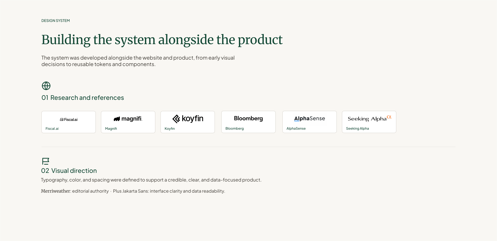
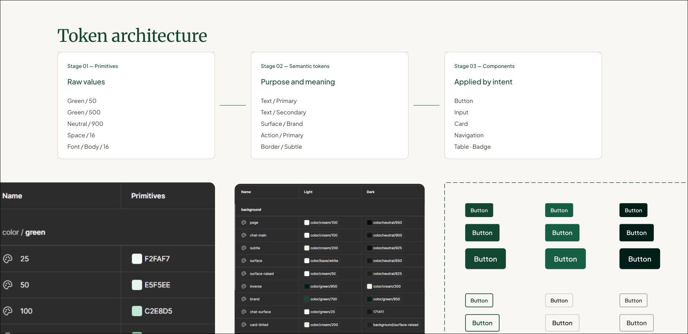
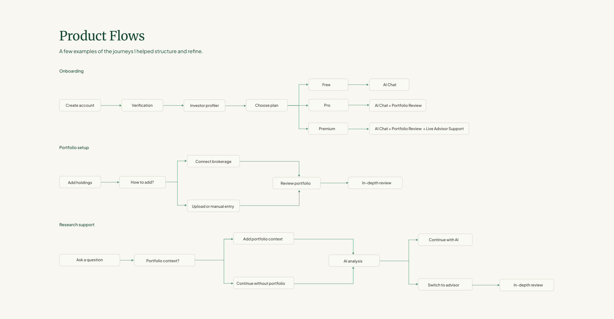

ABOUT THE PRODUCT
Built for experienced investors
Zacks Insight helps experienced investors research securities, understand portfolio risk, and make more informed decisions while staying in control.
“What is my biggest risk?”
Experienced US investors managing significant portfolios who value clarity, risk awareness, and independent decision-making.
MY ROLE
Working across the product ecosystem
I worked across product UX, design systems, web experiences, onboarding, and marketing communication—helping create a more consistent experience across Zacks Insight.
Product
- • Portfolio experience
- • Investment research
- • Onboarding
- • Information architecture
Design System
- • Components
- • Tokens
- • Interaction patterns
- • Reusable UI foundations
Web
- • Marketing website
- • Landing pages
- • Product communication
Marketing
- • Email campaigns
- • Marketing assets
- • Feature communication
THE DESIGN CHALLENGE
Making complex investment intelligence easier to understand—without oversimplifying it
Zacks Insight serves experienced investors who expect depth, credibility, and control. The challenge was to make complex financial information easier to navigate while preserving the sophistication they rely on.


